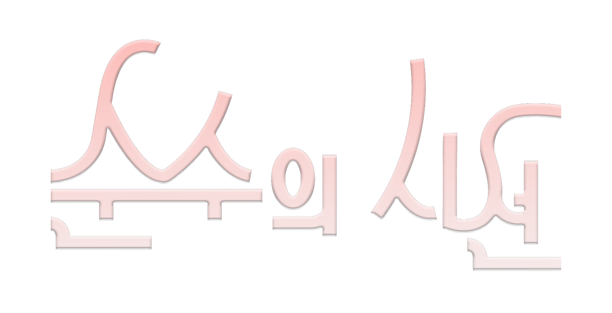

✦
화면을 터치하여 안내를 시작하세요
전시 소개
✦
〈순수의 시선〉 전시회에 오신 것을 환영합니다.
본 전시는 은평구의 문화·예술 발전과 잠재력 있는 신예 작가들을 위해 은평문화협회가 주최하고,
사회적기업 유니큐브, 심리상담센터 여정, 은평미래비전센터의 따뜻한 후원으로 마련되었습니다.
이번 전시에는 총 20점의 작품이 소개됩니다.
특기할 점은 작품 곁에
작가의 이름이나 기획 의도를 별도로 표기하지 않았다는 것입니다.
이는 관람객 여러분이 어떠한 선입견이나 정해진 틀 없이,
오롯이 자신의 시선으로 작품과 마주하기를 바라는 뜻을 담고 있습니다.
전시를 관람하시는 동안 작품 너머에 담긴 작가들의 섬세한 감정과 메시지를 자유롭게 상상하며,
온전한 ‘나’만의 감상에 빠져 보는 뜻깊은 시간이 되시기를 바랍니다.
✦
동선 안내
✦
화살표 버튼이나 좌우로 넘겨 이동하세요
✦
✓
안내가 완료되었습니다
관람객-
담당 도슨트-